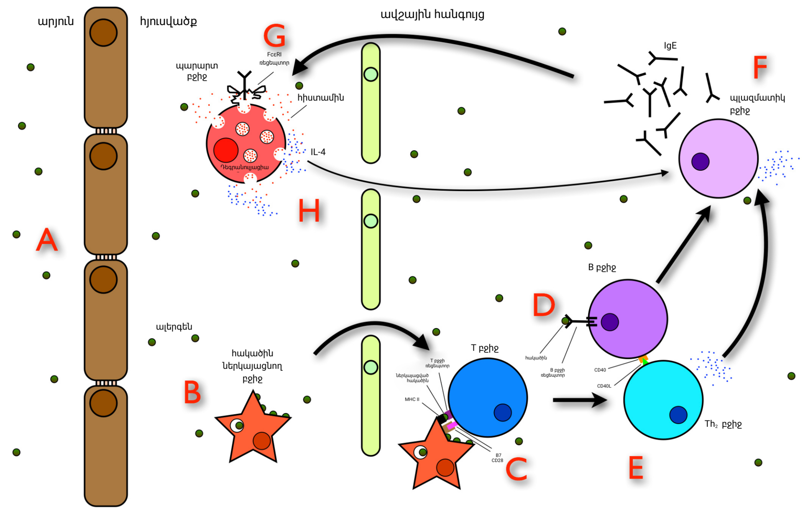

第 10 章
心慌的常备战
你大概有过这种时刻：坐在一个安静的房间里，什么都没发生，但胸腔里突然像有人擂鼓。心跳快得你没法忽略它，太阳穴在跳，指尖微微发颤，呼吸不自觉地变浅变快。你试着深吸一口气，想把那面鼓按

免疫细胞攻击花粉颗粒示意图
图源：维基共享资源 · SariSabban , Armenian translation by user:GgGevorg · CC BY-SA 3.0
住，但做不到。然后你开始想：我是不是心脏出了毛病？这个念头本身让心跳又快了一拍。
我们通常把这种感觉叫心慌，把它归入“情绪问题”或者“植物神经紊乱”一类的模糊地带。但如果我们把它从病理学的抽屉里拿出来，放到进化史的桌子上摊开看，它会显出完全不同的形状。
心慌不是故障。出汗也不是。呼吸急促更不是。它们是一套指令——一套在人类身体里运转了至少两亿年的备战程序，精确、高效、强制，而且不可协商。
要理解这套程序，我们得先回到一个没有截止日期、没有房贷、没有社交评价的世界里去。想象一片东非草原，三百七十万年前。一个南方古猿正在稀树草原的边缘挖掘块茎。
她的注意力集中在地下，手指在干燥的泥土里摸索，听觉却始终开着，扫描着周围的声音模式——风过草尖的沙沙声，远处鸟群的鸣叫，昆虫在耳边飞过的嗡鸣。这些声音都是安全的，它们构成了一个熟悉的背景噪音层。
然后草丛里传来一个不同的声音。枯枝折断，很轻，但节奏不对——不是风，不是鸟。是有重量的东西踩上去了。
在这个声音到达她意识之前，她的身体已经做出了整套反应。颞叶深处的杏仁核在不到十分之二秒内完成了威胁匹配——这个声音模式在进化史上和捕食者关联了太多次，以至于不需要经过皮层审核，杏仁核直接向下丘脑发出了警报。
下丘脑同时启动两条通路：一条是神经通路，电信号沿脊髓两侧的交感神经链向下狂奔，在不到一秒内到达心脏、肺、肝脏、脾脏和肾上腺髓质；另一条是化学通路，下丘脑向脑垂体释放促肾上腺皮质激素释放激素，脑垂体再向血液中释放促肾上腺皮质激素，后者顺着血流到达肾上腺皮质，命令它开始合成皮质醇。第一条通路的效果几乎是即时的。
心脏窦房结收到去甲肾上腺素的信号，起搏频率从每分钟七十次跳到了一百四十次——不是慢慢加速，而是在三次心跳之内完成了翻倍。每一次收缩都更有力，把更多血液泵向大腿、上臂和背部的骨骼肌。这些肌肉里的血管在肾上腺素的作用下扩张，血流量可以瞬间增加三到五倍。皮肤和内脏的血管收缩——脸色变白，消化暂停，肾脏减少尿液生成。气管和支气管的平滑肌松弛，气道变宽，每一次呼吸都灌进更多氧气。肝脏把储存的糖原拆解成葡萄糖倒进血液，血糖在几秒内飙升。脾脏收缩，把储存的红细胞挤出来，血液携氧能力立刻增强。
手掌开始出汗——不是为了降温，而是增加皮肤摩擦力，让抓握更牢。瞳孔放大，视野边缘的任何动静都变得清晰可辨。这一切发生在两到三秒之内。
整套程序有一个名字：急性应激反应，或者更通俗地说，“战斗或逃跑”。名字本身就是一个精确的说明书。这套程序只为两种结局设计：战斗，或者逃跑。两种都是高强度的体力活动，都需要肌肉在极短时间内输出最大功率。
所以身体的备战逻辑是彻头彻尾的肌肉优先——心脏和肺全力给肌肉供氧，肝脏给肌肉供燃料，脾脏给肌肉供运力，免疫系统暂时靠边站，消化系统先停工，生殖功能和生长修复这些长期项目全部暂缓。在生死关头，一切都是可以牺牲的奢侈品。
斑马在狮子追赶时的生理变化和这个南方古猿几乎完全一样。兔子被鹰盯上时也一样。蜥蜴被蛇袭击时也一样。这套系统在脊椎动物演化史上被保留了至少两亿年，经过无数次微调和压力测试，在它的适用场景里几乎完美无缺。
它只有一个前提条件：威胁是急性的，是体力的，并且会有一个终点——要么你死了，要么威胁消失了。这个前提在草原上总是成立。狮子追你，三分钟之内出结果。
你跑掉了，找个安全的地方喘半小时，皮质醇帮你维持住血糖和血压，然后负反馈回路启动——海马体和下丘脑感知到血液中的皮质醇浓度够高了，发出信号关闭HPA轴，皮质醇水平回落，交感神经退位，副交感神经重新接管。心率降回基线，消化恢复，免疫系统回来上班。整个过程在一小时之内完成。
身体回到“休息与消化”模式，继续做它日常的维护工作。但人类在最近一万年里——尤其是最近两百年里——创造了一种全新的威胁类型。这种威胁不需要你跑，不需要你打，甚至不需要它真的出现在你面前。它可以是一个数字，一行文字，一个想象中的场景，一个从未发生但你可能反复预演的对话。它叫“截止日期”，叫“绩效考核”，叫“社交评价”，叫“财务不确定性”，叫“三十年后我拿什么养老”。
这些东西没有一个是狮子。但杏仁核不知道。杏仁核的威胁识别系统是一套模式匹配算法，它在进化中被训练来识别物理威胁的线索：快速逼近的物体、尖锐的声音、愤怒的面孔、被注视的感觉、高处、密闭空间、血液、腐烂的气味。这些线索的共同特征是它们都指向直接的、需要立即行动的危险。
杏仁核没有进化出识别“Excel表格里那个红色的逾期标记”的能力，因为这个东西在进化史上出现的时间太短了——短到基因还来不及为它写一行新代码。但杏仁核有一个特性：它可以从皮层学习。
如果你的前额叶皮层反复把某个刺激标记为“这很糟糕，我很担心”，杏仁核最终会把这个刺激纳入它的威胁数据库。这个过程不需要理性审核。你不需要真的被Excel表格攻击过，你只需要反复地在看到它的时候感到焦虑，杏仁核就会把“Excel表格”和“威胁”关联起来。下一次你再看到它，杏仁核直接拉警报，绕过皮层。
这就产生了一个根本性的错配：一套为三分钟体力危机设计的备战程序，被用来应对持续数月甚至数年的心理压力。程序本身没有问题——它在它所适应的环境里是精妙的、高效的、甚至是优美的。
问题是触发它的信号类型变了，而程序不知道。它看到威胁标记被激活，就按照两亿年的标准流程执行全套备战：心率飙升，血糖飙升，肌肉充血，消化暂停，免疫抑制。它不知道你不需要跑。它不知道你只是坐在椅子上盯着屏幕。
更麻烦的是，现代威胁没有明确的终点。狮子要么吃掉你，要么放弃你，不管哪种结局，事件都有个收尾。截止日期过了还有下一个截止日期。绩效考核结束了还有明年的。
房贷还完了还有孩子的教育费。社交媒体上的负面评论永远不会清零。你的大脑可以在任何时候——凌晨三点，周末早晨，假期第一天——凭空调用这些威胁，然后身体就再做一轮备战。每一次调用都触发真实的肾上腺素和皮质醇释放，每一次都没有体力消耗来收尾，每一次都让激素在血液里多停留几个小时。
这就是慢性压力的生理本质：不是应激系统本身坏了，而是关掉它的开关失灵了。
皮质醇是这个故事里最关键的分子之一。前面说过，它在急性应激中的角色是后勤部长——维持血糖，维持血压，确保大脑和肌肉在危机持续期间不会因为燃料耗尽而崩溃。它的起效时间是分钟级，半衰期大约一小时。在草原上，这意味着一次应激事件之后，皮质醇帮你撑过恢复期，然后负反馈回路把它关掉。
但如果应激事件一个接一个地来，或者持续不断，皮质醇就一直在血液里待着。下丘脑和垂体的皮质醇受体长期暴露在高浓度皮质醇中，会逐渐变得不敏感——就像你一直待在很吵的房间里，耳朵会自动调低灵敏度一样。
负反馈回路的阈值被抬高了：本来血液皮质醇浓度达到某个水平就应该触发“关掉”信号，现在需要更高的浓度才能触发同样的信号。恒温器坏了，暖气一直烧。
长期皮质醇升高对身体的影响是系统性的，而且几乎全是负面的。先说大脑。海马体是记忆和情绪调节的关键结构，它的神经元表面有大量皮质醇受体。长期高皮质醇会导致海马体神经元树突萎缩，神经发生减少，海马体体积缩小。这不是推测——神经影像学已经反复证实，慢性应激障碍患者的海马体体积平均比健康对照组小百分之八到百分之十。海马体恰好也是HPA轴负反馈回路的关键节点：它感知血液中的皮质醇水平，然后告诉下丘脑“够了，关掉”。
海马体受损意味着负反馈回路进一步失灵——又一个恶性循环。前额叶皮层同样遭殃。前额叶负责执行功能：计划、决策、冲动控制、注意力调节。慢性应激让前额叶神经元之间的连接减少，树突回缩。杏仁核却在慢性应激中变得更大、更敏感——它的神经元树突反而增生，突触连接增强。
这意味着大脑的威胁检测系统被调高了灵敏度，而负责理性评估“这个威胁到底有多严重”的系统被削弱了。你更容易感到威胁，更难以说服自己其实没事。
这就是为什么长期处于压力下的人会出现注意力不集中、记忆力下降、决策困难、情绪波动。这不是意志力薄弱，不是性格缺陷，这是前额叶和海马体在生化层面上被皮质醇持续侵蚀的后果。你可以在一个人的脑扫描里看到它。
再说代谢。皮质醇的急性功能之一是升高血糖，同时让细胞对胰岛素不那么敏感——这是为了让肌肉和大脑在危机中优先获得燃料。如果这种状态持续几个月，胰岛素抵抗就会变成常态。皮质醇还促进腹部脂肪细胞的增殖和分化——它直接指导身体把能量储存在腹部，因为腹部脂肪离肝脏近，在需要快速调动能量时最方便。这是另一项古老的备战设计：为下一次可能发生的饥荒或持久危机预存燃料。但如果“下一次危机”永远不会真正到来——它只是你的大脑在反复模拟——那么腹部脂肪就只存不用，血脂异常、血压升高、动脉硬化加速。
代谢综合征——中心性肥胖、高血糖、高血脂、高血压四项组合——在慢性压力人群中的发生率远高于普通人群。这不仅仅是“压力大的人吃得不好”能解释的；即使饮食和运动量完全相同，高皮质醇水平本身就会推动代谢指标向代谢综合征的方向偏移。
免疫系统也逃不掉。急性应激时，交感神经末梢释放的去甲肾上腺素可以直接与免疫细胞表面的受体结合，短暂地增强某些免疫功能——把免疫细胞动员到皮肤和黏膜，为可能发生的伤口做准备。这是有道理的：如果你即将和狮子搏斗，你希望免疫细胞提前到位，在受伤的第一时间控制感染。
但如果应激持续，皮质醇开始全面抑制免疫反应：淋巴细胞数量下降，抗体产生减少，炎症因子释放被抑制。长期压力下的人更容易感冒，伤口愈合更慢，疫苗产生的抗体滴度更低。这些都不是巧合，不是“抵抗力差”这种模糊说法的注脚，而是HPA轴和交感神经系统对免疫功能的直接调控带来的可测量后果。现在我们可以回到本章的切入信号了：心慌。
心悸——对心跳的不适感知——在医学上被定义为对自身心跳的异常觉察。正常情况下，你感觉不到自己的心脏。它每分钟跳几十次，一辈子跳几十亿次，绝大多数时候它都安静地待在胸腔里完成工作，不需要你的注意。
但当交感神经高度激活时，心脏收缩力增强、心率加快，搏动的力度大到你能在胸壁内侧感觉到它，甚至在耳朵里听到血液冲击血管的声音。任何一个健康人在剧烈运动、惊吓或极度愤怒时都会感到心跳加速。这不是问题。
问题出在当没有运动、没有惊吓、没有愤怒的时候，你依然感到心跳在狂飙。你坐在办公桌前，身体静止，但心脏像在冲刺。你躺在床上准备入睡，胸腔里的鼓点越来越响，响到你无法忽略它。
然后你开始担心：是不是心脏出了毛病？这个担心本身又激活了杏仁核，又一轮肾上腺素释放，心率更快，心悸更明显——一个完美的正反馈循环。
这个循环在临床上有一个名字，叫惊恐发作。它的典型表现是：突然出现的心悸、胸痛、呼吸急促、出汗、颤抖、头晕、濒死感或失控感，通常在十分钟内达到峰值。
经历过一次惊恐发作的人往往会发展出对再次发作的恐惧，于是回避可能触发发作的场景。而这种回避行为本身又强化了大脑对这些场景的危险标记。最终可以演变成广场恐惧症——患者被困在自己的家里，不是因为腿不能走，而是因为杏仁核已经把“出门”标记成了等同于“遇见狮子”的威胁等级。
但惊恐发作只是极端情况。更普遍的是慢性低度焦虑：总是隐隐觉得有什么事要发生，胸口像压着一块小石头，呼吸不深，入睡困难，容易惊醒，对突然的声音过度敏感。
从进化生理学的角度去看，这种状态不是一种“心理问题”，而是一种持续的、低强度的应激系统激活——身体一直在备战，但战场永远不出现。这里我们需要回应一个重要的质疑。
有人会说，焦虑和心慌不过是进化遗留的缺陷，是神经系统偶尔短路的副产品，在远古环境中也许中性甚至有害，它们的保留纯属偶然，现代人的焦虑症只是病理表现，与适应性无关。这个说法听起来合理，但经不起推敲。
如果焦虑真的只是一个随机缺陷，我们应该在人群中看到它随机分布，与威胁检测能力无关。但实际情况恰恰相反：广泛性焦虑障碍患者在威胁检测任务中的表现优于健康对照组——他们更快地识别愤怒面孔，更准确地记住威胁相关词汇，对模糊刺激做出更偏向威胁的解释。
这不是功能损坏，这是功能调得太高。他们的系统没有坏，只是被校准到了一个与当前环境不匹配的灵敏度上。另一个证据来自遗传学。影响应激反应敏感度的基因变异——比如血清素转运体基因的短等位基因变体——在全球人群中的频率并不低，在某些人群中甚至超过百分之五十。
如果这些变异纯粹是有害的，自然选择应该在几千代人的时间里把它压到很低的频率。它们之所以还在，很可能是因为在某些环境中，高敏感度的应激系统确实是优势。大量研究表明，携带这些敏感基因型的人在童年逆境中确实更容易发展出焦虑和抑郁，但在支持性环境中，他们的表现反而优于携带低敏感基因型的人。
这被称为差异易感性假说：敏感基因型不是坏基因，它们只是让人对环境的反应更强——无论是好环境还是坏环境。换句话说，进化保留的不是焦虑本身，而是对环境高度敏感的应激系统。这个系统在危险环境中救命，在安全环境中致人痛苦。当现代生活把大量虚假威胁信号注入环境时，这个系统就被拖进了一场没完没了的备战状态。那场备战具体是怎么消耗身体的，我们可以从几个可测量的指标来看。
静息心率。交感神经长期激活之下，静息心率会逐渐升高。正常成年人的静息心率在每分钟六十到一百次之间，一个长期处于压力状态的人可能在完全没有自觉的情况下，静息心率稳定在八十五以上——他自己觉得“我没紧张啊”，但他的窦房结一直在接收去甲肾上腺素的催促信号。
心率变异性——连续心跳之间微小的时间差异——会下降。心率变异性是衡量自主神经系统弹性的重要指标：高变异性意味着交感和副交感之间在灵活切换，低变异性意味着交感神经一家独大，副交感被压制得抬不起头。
低心率变异性是心血管疾病、糖尿病并发症甚至全因死亡率的独立预测因子。睡眠结构。入睡需要副交感神经主导，需要心率和血压下降，需要核心体温降低零点几度。
但一个皮质醇水平偏高的人，交感神经迟迟不退位，入睡就变得困难。即使睡着了，深睡眠的比例也会下降——深睡眠阶段原本是身体修复组织、巩固记忆、清除脑内代谢废物的关键窗口。
睡眠变浅意味着醒来之后仍然疲惫，疲惫又进一步激活应激系统——又一个恶性循环。凌晨三四点无故醒来，再难入睡，这是高皮质醇人群的经典症状之一，因为皮质醇的自然分泌节律本来就会在清晨达到峰值，如果基线已经偏高，凌晨的峰值就会提前把人唤醒。
消化系统。交感神经激活时，胃肠道蠕动减慢，消化液分泌减少，括约肌收缩。偶尔一次没关系，但如果每天都这样，功能性消化不良、胃食管反流、肠易激综合征的风险就会显著增加。
肠易激综合征和焦虑障碍的共病率高得惊人——大约百分之五十到七十的肠易激综合征患者同时符合焦虑障碍的诊断标准，这个数字远高于偶然重叠的概率。
肠道有自己的神经网络——肠神经系统，含有一亿以上的神经元，与大脑通过迷走神经双向通信。这条通信线路在慢性应激中一直在满负荷运转，发报的内容只有一句话：危险，准备行动。所有这些消耗累积在一起，会把人推向一个临界点。这个临界点在不同的人身上有不同的诊断标签：惊恐障碍，广泛性焦虑症，慢性疲劳综合征，纤维肌痛。这些诊断名称不同，但它们共享一个核心特征：身体的警报系统被卡在了“开”的位置，无法复位。
神经和免疫系统以及能量代谢问题可能是因素之一——这个判断来自对肌痛性脑脊髓炎与慢性疲劳综合征病因的多年研究，但它也适用于更广泛的压力相关疾病谱。我们确切知道的机制已经足够多，但把这些机制串联起来的完整图景仍然有空白。我们还不知道为什么有些人在同样的压力负荷下发展出心悸，有些人发展出腹泻，有些人发展出全身疼痛。
我们只知道，这些不同的表现很可能指向同一个源头：一套为短时体力危机设计的备战程序，在现代环境中被反复激活，却找不到关闭的时机。这就回到了全书反复出现的那个概念：身体密令。心慌是交感神经在说“准备行动”。出汗是身体在为散热和抓握做准备。呼吸急促是在提前给血液充氧。
所有这些信号都不是故障，而是进化塑造的适应性指令，通过痛苦感确保执行。它们的痛苦感——心跳快得让你害怕，呼吸急得让你恐慌——本身就是指令的一部分。如果不难受，你就不会把它当回事。如果心慌是一种舒服的感觉，那个南方古猿可能就不会在草丛有异响的时候跑起来，她就不会活到把基因传给你的那一天。密令的痛苦性是它被进化保留的核心原因。
它必须让你难受，你才会行动。问题是，当行动不再可能——当威胁不是狮子而是Excel表格，当战场不是草原而是凌晨三点的卧室天花板——这套密令就变成了一种纯粹的消耗。它不断发出“准备行动”的指令，但行动永远不会发生。肾上腺素和皮质醇在血液里循环，找不到出口。
交感神经一直开着，副交感神经抬不起头。身体在备战，备战，再备战，却没有一场战斗能让它解甲归田。那场永远不会结束的备战最终会落在一个具体的人身上，落在一个具体的器官上。它可能落在心脏——心悸、心动过速、血压升高，经年累月之后变成左心室肥厚，变成冠状动脉粥样硬化的加速器。
它也可能落在消化道——蠕动紊乱、黏膜屏障削弱、菌群失调，变成一种顽固的、反复发作的腹泻，找不到病原体，却真实地影响着每一天的生活质量。那条从大脑通向腹部的电报线一直在发报，内容只有一句话：危险，准备行动。而肠道只能执行命令，日复一日地收缩或松弛，不知道战场在哪里，也不知道停战的信号什么时候才会到来。